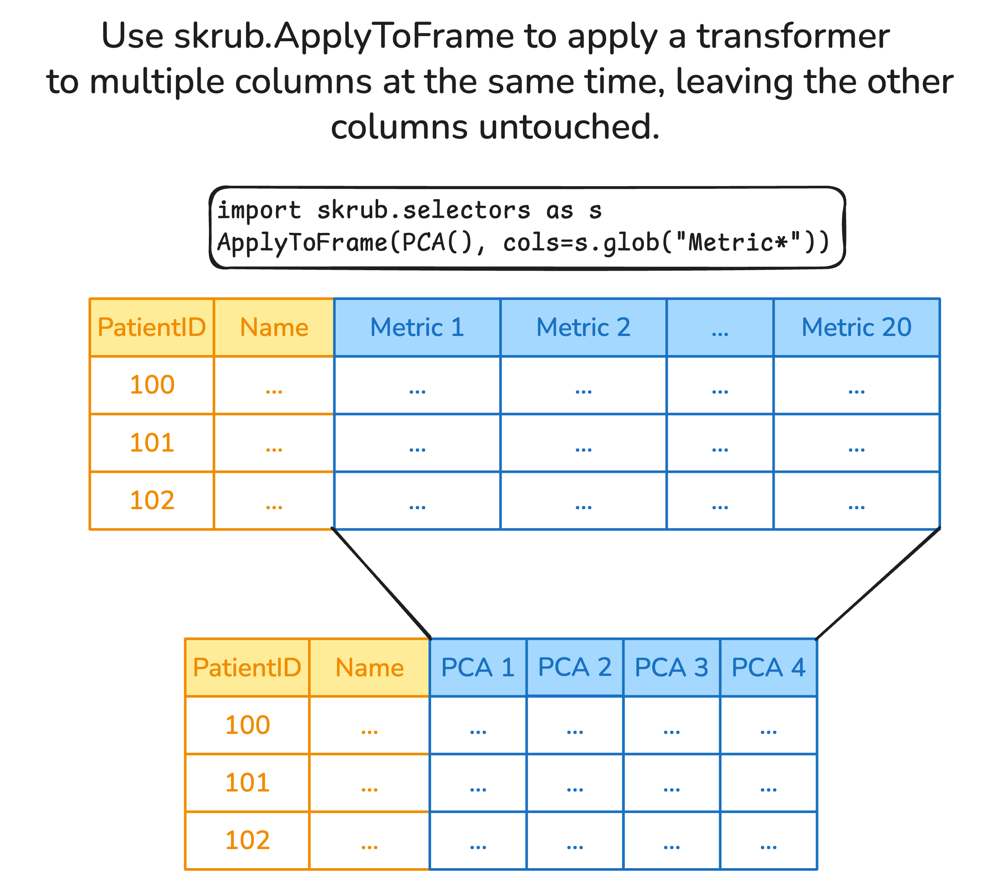

Skrub
Machine learning with dataframes
Riccardo Cappuzzo
Inria P16
2025-11-21
whoami
I am a research engineer at Inria as part of the P16 project, and I am the lead developer of skrub

I’m Italian, but I don’t drink coffee, wine, and I like pizza with fries

I did my PhD in Côte d’Azur, and I moved away because it was too sunny and I don’t like the sea

Building a predictive pipeline with skrub
Premise and warning
Important
This lecture should give you an idea of possible problems you might run into, and how skrub can help you deal with (some of) them. The idea is giving you material you can refer back to if you encounter the same issue later on.
Skrub compatibility
- Skrub is fully compatible with pandas and polars
- Skrub transformers are fully compatible with scikit-learn
An example pipeline
- Gather some data
- Explore the data
- Preprocess the data
- Perform feature engineering
- Build a scikit-learn pipeline
- ???
- Profit?

Exploring the data
import pandas as pd
import matplotlib.pyplot as plt
import skrub
dataset = skrub.datasets.fetch_employee_salaries()
employees, salaries = dataset.X, dataset.y
df = pd.DataFrame(employees)
# Plot the distribution of the numerical values using a histogram
fig, axs = plt.subplots(2,1, figsize=(10, 6))
ax1, ax2 = axs
ax1.hist(df['year_first_hired'], bins=30, edgecolor='black', alpha=0.7)
ax1.set_xlabel('Year first hired')
ax1.set_ylabel('Frequency')
ax1.grid(True, linestyle='--', alpha=0.5)
# Count the frequency of each category
category_counts = df['department'].value_counts()
# Create a bar plot
category_counts.plot(kind='bar', edgecolor='black', ax=ax2)
# Add labels and title
ax2.set_xlabel('Department')
ax2.set_ylabel('Frequency')
ax2.grid(True, linestyle='--', axis='y', alpha=0.5) # Add grid lines for y-axis
fig.suptitle("Distribution of values")
# Show the plot
plt.show()Exploring the data
Exploring the data with skrub
Main features:
- Obtain high-level statistics about the data
- Explore the distribution of values and find outliers
- Discover highly correlated columns
- Export and share the report as an
htmlfile
Exploring the data with skrub
Things to notice
- Shape of the dataframe (rows, columns)
- Dtype of the columns (string, numerical, datetime)
- Were dtypes converted properly?
- Missing values
- Are there columns with many missing values?
- Distribution of values
- Are there columns with high cardiinality?
- Are there outliers?
- Are there columns with imbalanced distributions?
- Column associations
- Are there correlated columns?
Intermission: reading files, parsing dtypes
- CSV vs Parquet+
- Fun with separators
What happens if pandas parses this?
id,code,name,slug
15,76,Occitanie,occitanie
16,84,Auvergne-Rhône-Alpes,"auvergne rhone alpes"
17,93,"Provence-Alpes-Côte d'Azur","provence alpes cote dazur"
18,94,Corse,corse
19,COM,"Collectivités d'Outre-Mer","collectivites doutre mer"What happens if pandas parses this?
How about now?
Department code;Department name;Town code;Town name;Registered;Abstentions;Null;Choice A;Choice B
ZZ;FRANCAIS DE L'ETRANGER;8;Europe du Sud, Turquie, Israël;109763;84466;292;9299;15706
ZZ;FRANCAIS DE L'ETRANGER;9;Afrique Nord-Ouest;98997;59887;321;22116;16673
ZZ;FRANCAIS DE L'ETRANGER;10;Afrique Centre, Sud et Est;89859;46782;566;17008;25503
ZZ;FRANCAIS DE L'ETRANGER;11;Europe de l'est, Asie, Océanie;80061;42911;488;13975;22687How about now?
| Department code;Department name;Town code;Town name;Registered;Abstentions;Null;Choice A;Choice B | ||
|---|---|---|
| ZZ;FRANCAIS DE L'ETRANGER;8;Europe du Sud | Turquie | Israël;109763;84466;292;9299;15706 |
| ZZ;FRANCAIS DE L'ETRANGER;9;Afrique Nord-Ouest;98997;59887;321;22116;16673 | NaN | NaN |
| ZZ;FRANCAIS DE L'ETRANGER;10;Afrique Centre | Sud et Est;89859;46782;566;17008;25503 | NaN |
| ZZ;FRANCAIS DE L'ETRANGER;11;Europe de l'est | Asie | Océanie;80061;42911;488;13975;22687 |
Data cleaning with pandas/polars: setup
import pandas as pd
import numpy as np
data = {
"Int": [2, 3, 2], # Multiple unique values
"Const str": ["x", "x", "x"], # Single unique value
"Str": ["foo", "bar", "baz"], # Multiple unique values
"All nan": [np.nan, np.nan, np.nan], # All missing values
"All empty": ["", "", ""], # All empty strings
"Date": ["01 Jan 2023", "02 Jan 2023", "03 Jan 2023"],
}
df_pd = pd.DataFrame(data)
display(df_pd)| Int | Const str | Str | All nan | All empty | Date | |
|---|---|---|---|---|---|---|
| 0 | 2 | x | foo | NaN | 01 Jan 2023 | |
| 1 | 3 | x | bar | NaN | 02 Jan 2023 | |
| 2 | 2 | x | baz | NaN | 03 Jan 2023 |
import polars as pl
import numpy as np
data = {
"Int": [2, 3, 2], # Multiple unique values
"Const str": ["x", "x", "x"], # Single unique value
"Str": ["foo", "bar", "baz"], # Multiple unique values
"All nan": [np.nan, np.nan, np.nan], # All missing values
"All empty": ["", "", ""], # All empty strings
"Date": ["01 Jan 2023", "02 Jan 2023", "03 Jan 2023"],
}
df_pl = pl.DataFrame(data)
display(df_pl)
shape: (3, 6)
| Int | Const str | Str | All nan | All empty | Date |
|---|---|---|---|---|---|
| i64 | str | str | f64 | str | str |
| 2 | "x" | "foo" | NaN | "" | "01 Jan 2023" |
| 3 | "x" | "bar" | NaN | "" | "02 Jan 2023" |
| 2 | "x" | "baz" | NaN | "" | "03 Jan 2023" |
Nulls, datetimes, constant columns with pandas/polars
# Parse the datetime strings with a specific format
df_pd['Date'] = pd.to_datetime(df_pd['Date'], format='%d %b %Y')
# Drop columns with only a single unique value
df_pd_cleaned = df_pd.loc[:, df_pd.nunique(dropna=True) > 1]
# Function to drop columns with only missing values or empty strings
def drop_empty_columns(df):
# Drop columns with only missing values
df_cleaned = df.dropna(axis=1, how='all')
# Drop columns with only empty strings
empty_string_cols = df_cleaned.columns[df_cleaned.eq('').all()]
df_cleaned = df_cleaned.drop(columns=empty_string_cols)
return df_cleaned
# Apply the function to the DataFrame
df_pd_cleaned = drop_empty_columns(df_pd_cleaned)# Parse the datetime strings with a specific format
df_pl = df_pl.with_columns([
pl.col("Date").str.strptime(pl.Date, "%d %b %Y", strict=False).alias("Date")
])
# Drop columns with only a single unique value
df_pl_cleaned = df_pl.select([
col for col in df_pl.columns if df_pl[col].n_unique() > 1
])
# Import selectors for dtype selection
import polars.selectors as cs
# Drop columns with only missing values or only empty strings
def drop_empty_columns(df):
all_nan = df.select(
[
col for col in df.select(cs.numeric()).columns if
df [col].is_nan().all()
]
).columns
all_empty = df.select(
[
col for col in df.select(cs.string()).columns if
(df[col].str.strip_chars().str.len_chars()==0).all()
]
).columns
to_drop = all_nan + all_empty
return df.drop(to_drop)
df_pl_cleaned = drop_empty_columns(df_pl_cleaned)Data cleaning with skrub.Cleaner
Encoding datetime features with pandas/polars
import pandas as pd
data = {
'date': ['2023-01-01 12:34:56', '2023-02-15 08:45:23', '2023-03-20 18:12:45'],
'value': [10, 20, 30]
}
df_pd = pd.DataFrame(data)
datetime_column = "date"
df_pd[datetime_column] = pd.to_datetime(df_pd[datetime_column], errors='coerce')
df_pd['year'] = df_pd[datetime_column].dt.year
df_pd['month'] = df_pd[datetime_column].dt.month
df_pd['day'] = df_pd[datetime_column].dt.day
df_pd['hour'] = df_pd[datetime_column].dt.hour
df_pd['minute'] = df_pd[datetime_column].dt.minute
df_pd['second'] = df_pd[datetime_column].dt.secondimport polars as pl
data = {
'date': ['2023-01-01 12:34:56', '2023-02-15 08:45:23', '2023-03-20 18:12:45'],
'value': [10, 20, 30]
}
df_pl = pl.DataFrame(data)
df_pl = df_pl.with_columns(date=pl.col("date").str.to_datetime())
df_pl = df_pl.with_columns(
year=pl.col("date").dt.year(),
month=pl.col("date").dt.month(),
day=pl.col("date").dt.day(),
hour=pl.col("date").dt.hour(),
minute=pl.col("date").dt.minute(),
second=pl.col("date").dt.second(),
)What happens if we train directly on a datetime?
Adding periodic features with pandas/polars
Encoding datetime features with skrub.DatetimeEncoder
shape: (3, 7)
┌───────────┬────────────┬──────────┬───────────┬─────────────┬─────────────┬────────────────────┐
│ date_year ┆ date_month ┆ date_day ┆ date_hour ┆ date_minute ┆ date_second ┆ date_total_seconds │
│ --- ┆ --- ┆ --- ┆ --- ┆ --- ┆ --- ┆ --- │
│ f32 ┆ f32 ┆ f32 ┆ f32 ┆ f32 ┆ f32 ┆ f32 │
╞═══════════╪════════════╪══════════╪═══════════╪═════════════╪═════════════╪════════════════════╡
│ 2023.0 ┆ 1.0 ┆ 1.0 ┆ 12.0 ┆ 34.0 ┆ 56.0 ┆ 1.6726e9 │
│ 2023.0 ┆ 2.0 ┆ 15.0 ┆ 8.0 ┆ 45.0 ┆ 23.0 ┆ 1.6765e9 │
│ 2023.0 ┆ 3.0 ┆ 20.0 ┆ 18.0 ┆ 12.0 ┆ 45.0 ┆ 1.6793e9 │
└───────────┴────────────┴──────────┴───────────┴─────────────┴─────────────┴────────────────────┘Encoding datetime features skrub.DatetimeEncoder
shape: (3, 8)
┌───────────┬────────────┬────────────┬────────────┬───────────┬───────────┬───────────┬───────────┐
│ date_year ┆ date_total ┆ date_month ┆ date_month ┆ date_day_ ┆ date_day_ ┆ date_hour ┆ date_hour │
│ --- ┆ _seconds ┆ _circular_ ┆ _circular_ ┆ circular_ ┆ circular_ ┆ _circular ┆ _circular │
│ f32 ┆ --- ┆ 0 ┆ 1 ┆ 0 ┆ 1 ┆ _0 ┆ _1 │
│ ┆ f32 ┆ --- ┆ --- ┆ --- ┆ --- ┆ --- ┆ --- │
│ ┆ ┆ f64 ┆ f64 ┆ f64 ┆ f64 ┆ f64 ┆ f64 │
╞═══════════╪════════════╪════════════╪════════════╪═══════════╪═══════════╪═══════════╪═══════════╡
│ 2023.0 ┆ 1.6726e9 ┆ 0.5 ┆ 0.866025 ┆ 0.207912 ┆ 0.978148 ┆ 1.2246e-1 ┆ -1.0 │
│ ┆ ┆ ┆ ┆ ┆ ┆ 6 ┆ │
│ 2023.0 ┆ 1.6765e9 ┆ 0.866025 ┆ 0.5 ┆ 1.2246e-1 ┆ -1.0 ┆ 0.866025 ┆ -0.5 │
│ ┆ ┆ ┆ ┆ 6 ┆ ┆ ┆ │
│ 2023.0 ┆ 1.6793e9 ┆ 1.0 ┆ 6.1232e-17 ┆ -0.866025 ┆ -0.5 ┆ -1.0 ┆ -1.8370e- │
│ ┆ ┆ ┆ ┆ ┆ ┆ ┆ 16 │
└───────────┴────────────┴────────────┴────────────┴───────────┴───────────┴───────────┴───────────┘What periodic features look like

Encoding numerical features with skrub.SquashingScaler

Encoding numerical features with skrub.SquashingScaler

Encoding categorical (string/text) features
Categorical features have a “cardinality”: the number of unique values
- Low cardinality features:
OneHotEncoder- The
OneHotEncoderproduces sparse matrices. Dataframes are dense.
- The
- High cardinality features (>40 unique values):
- Using
OneHotEncodergenerates too many (dense) features. - Use encoders with a fixed number of output features.
- Using
- Latent Semantic Analysis with:
skrub.StringEncoder- Apply tf-idf to the ngrams in the column, followed by SVD.
- Robust, quick, fixed number of output features regardless of # of unique values.
Encoding categorical (string/text) features
- Textual features:
skrub.TextEncoderand pretrained models from HuggingFace Hub.- The
TextEncoderneeds Torch: very heavy dependency. - Models are large and take time to download.
- Encoding is much slower.
- However, performance can be much better depending on the dataset.
- The
Deeper dive in this post
Encoding all the features: TableVectorizer
- Apply the
Cleanerto all columns - Split columns by dtype and # of unique values
- Encode each column separately
Encoding all the features: TableVectorizer

Column transformations with ApplyToCols and ApplyToFrame

Column transformations with ApplyToCols and ApplyToFrame
Replacing ColumnTransformer with ApplyToCols
import pandas as pd
from sklearn.compose import make_column_selector as selector
from sklearn.compose import make_column_transformer
from sklearn.preprocessing import StandardScaler, OneHotEncoder
df = pd.DataFrame({"text": ["foo", "bar", "baz"], "number": [1, 2, 3]})
categorical_columns = selector(dtype_include=object)(df)
numerical_columns = selector(dtype_exclude=object)(df)
ct = make_column_transformer(
(StandardScaler(),
numerical_columns),
(OneHotEncoder(handle_unknown="ignore"),
categorical_columns))
transformed = ct.fit_transform(df)
transformedarray([[-1.22474487, 0. , 0. , 1. ],
[ 0. , 1. , 0. , 0. ],
[ 1.22474487, 0. , 1. , 0. ]])Replacing ColumnTransformer with ApplyToCols
import skrub.selectors as s
from sklearn.pipeline import make_pipeline
from skrub import ApplyToCols
numeric = ApplyToCols(StandardScaler(), cols=s.numeric())
string = ApplyToCols(OneHotEncoder(sparse_output=False), cols=s.string())
transformed = make_pipeline(numeric, string).fit_transform(df)
transformed| text_bar | text_baz | text_foo | number | |
|---|---|---|---|---|
| 0 | 0.0 | 0.0 | 1.0 | -1.224745 |
| 1 | 1.0 | 0.0 | 0.0 | 0.000000 |
| 2 | 0.0 | 1.0 | 0.0 | 1.224745 |
## Selecting columns with the skrub.selectors
We now have a pipeline!
- Gather some data
- Explore the data
skrub.TableReport
- Pre-process the data
Cleaner,ToDatetime…
- Perform feature engineering
skrub.TableVectorizer,SquashingScaler,TextEncoder,StringEncoder…
- Build a scikit-learn pipeline
tabular_pipeline,sklearn.pipeline.make_pipeline…
- ???
- Profit 📈
More information about the Data Ops
- Skrub example gallery
- Tutorial on timeseries forecasting at Euroscipy 2025
- Skrub User guide
- A Kaggle notebook on addressing the Titanic survival challenge with Data Ops
Wrapping up


Getting involved
Do you want to learn more?
Follow skrub on:
Star skrub on GitHub, or contribute directly:
tl;dw
skrub provides
- interactive data exploration
- automated pre-processing of pandas and polars dataframes
- powerful feature engineering
- DataOps, plans, hyperparameter tuning, (almost) no leakage

https://skrub-data.org/skrub-materials/